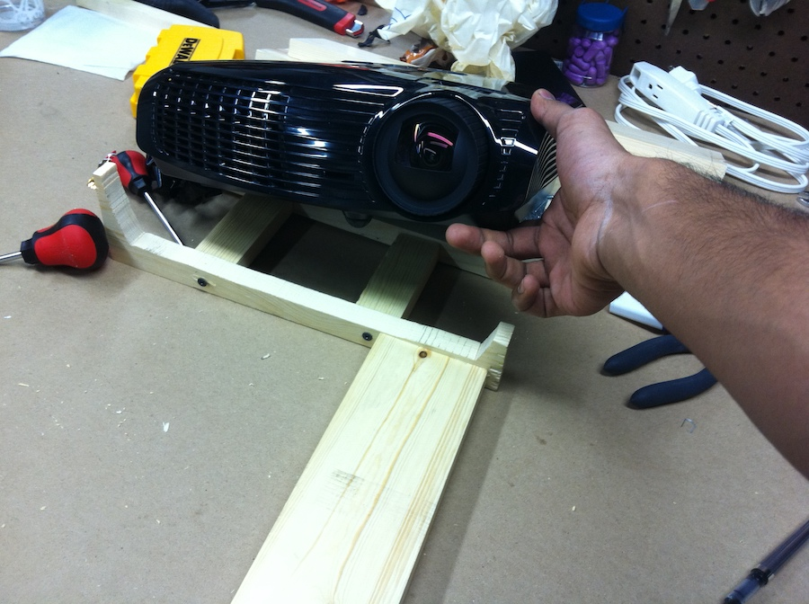
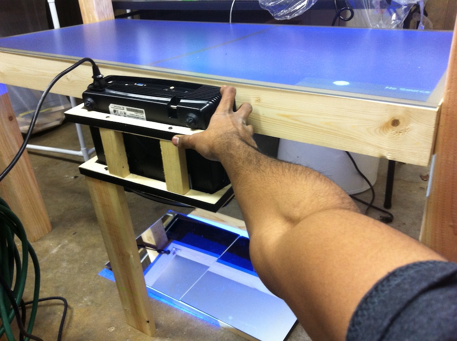
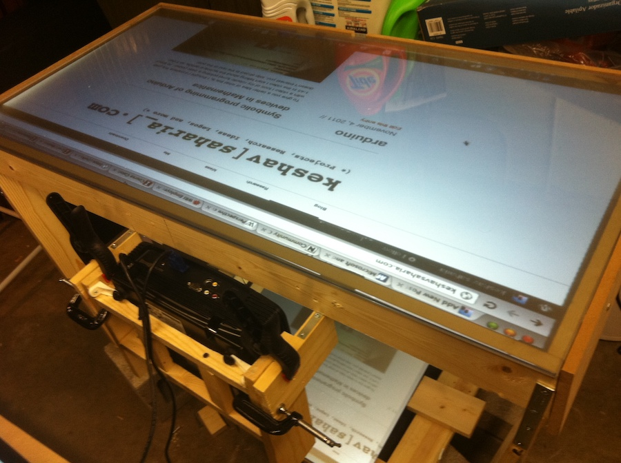

Touchscreen table
I started building this touchscreen table but was not able to get the capacitative touch working. I've posted a series of pictures of how I got the table itself working with a projector. I also linked to several projects online where this same concept is built to completion.
I bought a 2' x 4' sheet of acrylic and a light diffuser sheet online, and built a wooden frame to hold them.
I then built a wooden mount for a short-throw projector.

I angled the projector down at a mirror, which reflected the image back up onto the table. This was necessary since pointing the projector straight up from the bottom of the table limited the size of the displayed image. With this setup, I could spread the image across 2 feet within a coffee-table sized table.

I then built out the table and firmly attached the mounts for the projector.
The two mirrors, even when optimally arranged, had a slight seam between them that was impossible to get rid of. I replaced them with a single larger mirror.

Infrared touch detection
The sheet of acrylic on top of the light diffuser needs to have infrared LEDs shining into it at a 90 degree angle. I learned later that the specific type and illumination range of the LED, the exact angle it enters the sheet, and the edges of the acrylic sheet, all have very exact requirements.
In my initial tests of touch detection using a PS2 eye camera with the IR filter removed, the distinction between the untouched and touched surface was too small, and the accuracy too unreliable, to proceed with the project.
[ image of PS2 eye ]